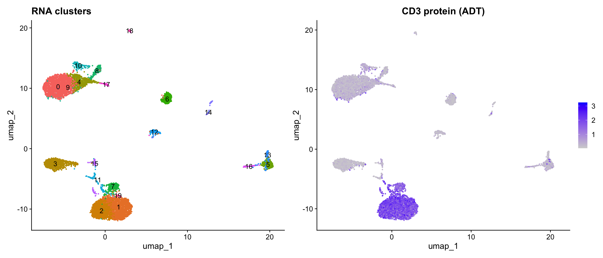
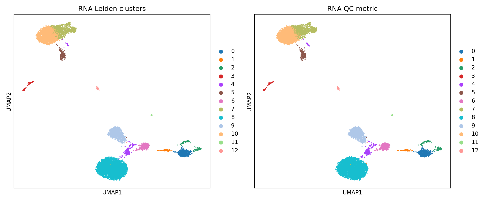

Overview
Multimodal single-cell experiments measure multiple data types from the same cells. This vignette demonstrates scConvert’s handling of:
- CITE-seq (RNA + surface protein / ADT) via h5mu format
- Multiome (RNA + ATAC) via h5Seurat format
The h5mu (MuData) format is the standard for multimodal data in the scverse ecosystem, storing each modality as a separate AnnData within a single file.
CITE-seq: CBMC dataset
The CBMC (cord blood mononuclear cell) dataset contains RNA and ADT (antibody-derived tag) measurements from CITE-seq:
library(SeuratData)
data("cbmc", package = "cbmc.SeuratData")
cbmc <- UpdateSeuratObject(cbmc)
cat("Cells:", ncol(cbmc), "\n")
#> Cells: 8617
cat("Assays:", paste(Assays(cbmc), collapse = ", "), "\n")
#> Assays: RNA, ADT
cat("RNA features:", nrow(cbmc[["RNA"]]), "\n")
#> RNA features: 20501
cat("ADT features:", nrow(cbmc[["ADT"]]), "\n")
#> ADT features: 10Process and cluster
cbmc <- NormalizeData(cbmc, verbose = FALSE)
cbmc <- FindVariableFeatures(cbmc, verbose = FALSE)
cbmc <- ScaleData(cbmc, verbose = FALSE)
cbmc <- RunPCA(cbmc, verbose = FALSE)
cbmc <- RunUMAP(cbmc, dims = 1:30, verbose = FALSE)
cbmc <- FindNeighbors(cbmc, dims = 1:30, verbose = FALSE)
cbmc <- FindClusters(cbmc, resolution = 0.8, verbose = FALSE)UMAP visualization
library(patchwork)
p1 <- DimPlot(cbmc, label = TRUE, pt.size = 0.3) + NoLegend() + ggtitle("RNA clusters")
# Normalize ADT
cbmc <- NormalizeData(cbmc, assay = "ADT", normalization.method = "CLR", verbose = FALSE)
p2 <- FeaturePlot(cbmc, features = "adt_CD3", pt.size = 0.3) + ggtitle("CD3 protein (ADT)")
p1 + p2
Export to h5mu
# Remove overlapping features (h5mu requires unique names per modality)
overlap <- intersect(rownames(cbmc[["ADT"]]), rownames(cbmc[["RNA"]]))
if (length(overlap) > 0) {
adt_keep <- setdiff(rownames(cbmc[["ADT"]]), overlap)
cbmc[["ADT"]] <- subset(cbmc[["ADT"]], features = adt_keep)
cat("Removed", length(overlap), "overlapping features from ADT\n")
}
#> Removed 4 overlapping features from ADT
h5mu_path <- tempfile(fileext = ".h5mu")
writeH5MU(cbmc, h5mu_path, overwrite = TRUE)
cat("h5mu file size:", round(file.size(h5mu_path) / 1024^2, 1), "MB\n")
#> h5mu file size: 44.9 MBValidate h5mu in Python
The exported h5mu file is directly compatible with the Python mudata/muon ecosystem:
import mudata as md
mdata = md.read_h5mu(r.h5mu_path)
print(mdata)
#> MuData object with n_obs × n_vars = 8617 × 20507
#> obs: 'orig.ident', 'nCount_RNA', 'nFeature_RNA', 'nCount_ADT', 'nFeature_ADT', 'rna_annotations', 'protein_annotations', 'RNA_snn_res.0.8', 'seurat_clusters'
#> 2 modalities
#> rna: 8617 x 20501
#> var: 'vst.mean', 'vst.variance', 'vst.variance.expected', 'vst.variance.standardized', 'vst.variable'
#> obsm: 'X_pca', 'X_umap'
#> layers: 'counts'
#> obsp: 'nn', 'snn'
#> prot: 8617 x 6
#> layers: 'counts'
print(f"\nModalities: {list(mdata.mod.keys())}")
#>
#> Modalities: ['rna', 'prot']
for name, mod in mdata.mod.items():
print(f" {name}: {mod.n_obs} cells x {mod.n_vars} features")
if mod.X is not None:
import numpy as np
x = mod.X.toarray() if hasattr(mod.X, 'toarray') else mod.X
print(f" X range: [{x.min():.2f}, {x.max():.2f}]")
#> rna: 8617 cells x 20501 features
#> X range: [0.00, 8.59]
#> prot: 8617 cells x 6 features
#> X range: [0.01, 5.03]import scanpy as sc
import matplotlib.pyplot as plt
rna = mdata.mod["rna"].copy()
sc.pp.normalize_total(rna)
sc.pp.log1p(rna)
sc.pp.highly_variable_genes(rna, n_top_genes=2000)
sc.pp.pca(rna)
sc.pp.neighbors(rna)
sc.tl.umap(rna)
sc.tl.leiden(rna, flavor="igraph")
fig, axes = plt.subplots(1, 2, figsize=(12, 5))
sc.pl.umap(rna, color="leiden", ax=axes[0], show=False, title="RNA Leiden clusters")
sc.pl.umap(rna, color="n_counts" if "n_counts" in rna.obs else rna.obs.columns[0],
ax=axes[1], show=False, title="RNA QC metric")
plt.tight_layout()
plt.show()
Load h5mu back
cbmc_rt <- readH5MU(h5mu_path)
cat("Cells:", ncol(cbmc_rt), "\n")
#> Cells: 8617
cat("Assays:", paste(Assays(cbmc_rt), collapse = ", "), "\n")
#> Assays: ADT, RNA
cat("RNA features:", nrow(cbmc_rt[["RNA"]]), "\n")
#> RNA features: 20501
cat("ADT features:", nrow(cbmc_rt[["ADT"]]), "\n")
#> ADT features: 6Verify preservation
cat("=== Dimensions ===\n")
#> === Dimensions ===
cat("Original:", ncol(cbmc), "cells,", length(Assays(cbmc)), "assays\n")
#> Original: 8617 cells, 2 assays
cat("Loaded: ", ncol(cbmc_rt), "cells,", length(Assays(cbmc_rt)), "assays\n")
#> Loaded: 8617 cells, 2 assays
cat("Assay match:", identical(sort(Assays(cbmc)), sort(Assays(cbmc_rt))), "\n")
#> Assay match: TRUE
common_c <- intersect(colnames(cbmc), colnames(cbmc_rt))
cat("\n=== Barcodes ===\n")
#>
#> === Barcodes ===
cat("Shared:", length(common_c), "/", ncol(cbmc), "\n")
#> Shared: 8617 / 8617
cat("\n=== RNA preservation ===\n")
#>
#> === RNA preservation ===
common_g <- intersect(rownames(cbmc[["RNA"]]), rownames(cbmc_rt[["RNA"]]))
cat("Features shared:", length(common_g), "/", nrow(cbmc[["RNA"]]), "\n")
#> Features shared: 20501 / 20501
set.seed(42)
sc <- sample(common_c, min(300, length(common_c)))
sg <- sample(common_g, min(100, length(common_g)))
rna_orig <- as.numeric(GetAssayData(cbmc, assay = "RNA", layer = "counts")[sg, sc])
rna_rt <- as.numeric(GetAssayData(cbmc_rt, assay = "RNA", layer = "counts")[sg, sc])
cat("Values identical:", identical(rna_orig, rna_rt), "\n")
#> Values identical: TRUE
cat("Max abs diff:", max(abs(rna_orig - rna_rt)), "\n")
#> Max abs diff: 0
cat("\n=== ADT preservation ===\n")
#>
#> === ADT preservation ===
common_adt <- intersect(rownames(cbmc[["ADT"]]), rownames(cbmc_rt[["ADT"]]))
cat("Features shared:", length(common_adt), "/", nrow(cbmc[["ADT"]]), "\n")
#> Features shared: 6 / 6
if (length(common_adt) > 0) {
adt_orig <- as.numeric(GetAssayData(cbmc, assay = "ADT", layer = "counts")[common_adt, sc])
adt_rt <- as.numeric(GetAssayData(cbmc_rt, assay = "ADT", layer = "counts")[common_adt, sc])
cat("Values identical:", identical(adt_orig, adt_rt), "\n")
cat("Max abs diff:", max(abs(adt_orig - adt_rt)), "\n")
}
#> Values identical: TRUE
#> Max abs diff: 0
cat("\n=== Metadata ===\n")
#>
#> === Metadata ===
shared_meta <- intersect(colnames(cbmc[[]]), colnames(cbmc_rt[[]]))
cat("Columns preserved:", length(shared_meta), "/", ncol(cbmc[[]]), "\n")
#> Columns preserved: 9 / 9Multiome: RNA + ATAC
10x Genomics Multiome measures RNA and chromatin accessibility (ATAC) from the same cells. scConvert supports roundtripping both modalities via h5mu.
library(SeuratData)
# Load both RNA and ATAC from PBMC Multiome
pbmc.rna <- LoadData("pbmcMultiome", "pbmc.rna")
pbmc.atac <- LoadData("pbmcMultiome", "pbmc.atac")
pbmc.rna <- UpdateSeuratObject(pbmc.rna)
pbmc.atac <- UpdateSeuratObject(pbmc.atac)
cat("RNA cells:", ncol(pbmc.rna), "\n")
cat("RNA features:", nrow(pbmc.rna), "\n")
cat("ATAC cells:", ncol(pbmc.atac), "\n")
cat("ATAC features (peaks):", nrow(pbmc.atac), "\n")Combine RNA + ATAC into a single object
# Find shared cells
shared_cells <- intersect(colnames(pbmc.rna), colnames(pbmc.atac))
cat("Shared cells:", length(shared_cells), "\n")
# Create combined object
combined <- CreateSeuratObject(
counts = GetAssayData(pbmc.rna, layer = "counts")[, shared_cells],
assay = "RNA"
)
combined[["ATAC"]] <- CreateAssay5Object(
counts = GetAssayData(pbmc.atac, layer = "counts")[, shared_cells]
)
cat("Combined object:\n")
cat(" Cells:", ncol(combined), "\n")
cat(" Assays:", paste(Assays(combined), collapse = ", "), "\n")
cat(" RNA features:", nrow(combined[["RNA"]]), "\n")
cat(" ATAC features:", nrow(combined[["ATAC"]]), "\n")Roundtrip via h5mu
The h5mu format stores each assay as a separate modality, making it ideal for multimodal data:
h5mu_path <- tempfile(fileext = ".h5mu")
writeH5MU(combined, h5mu_path, overwrite = TRUE)
cat("h5mu file size:", round(file.size(h5mu_path) / 1024^2, 1), "MB\n")
# Load back
combined_rt <- readH5MU(h5mu_path)
cat("Roundtrip assays:", paste(Assays(combined_rt), collapse = ", "), "\n")
cat("Roundtrip RNA features:", nrow(combined_rt[["RNA"]]), "\n")
cat("Roundtrip ATAC features:", nrow(combined_rt[["ATAC"]]), "\n")Verify preservation of both modalities
common_c <- intersect(colnames(combined), colnames(combined_rt))
cat("Cells preserved:", length(common_c), "/", ncol(combined), "\n")
set.seed(42)
sc <- sample(common_c, min(200, length(common_c)))
# RNA
rna_genes <- intersect(rownames(combined[["RNA"]]), rownames(combined_rt[["RNA"]]))
sg <- sample(rna_genes, min(100, length(rna_genes)))
rna_orig <- as.numeric(GetAssayData(combined, assay = "RNA", layer = "counts")[sg, sc])
rna_rt <- as.numeric(GetAssayData(combined_rt, assay = "RNA", layer = "counts")[sg, sc])
cat("RNA features preserved:", length(rna_genes), "/", nrow(combined[["RNA"]]), "\n")
cat("RNA values identical:", identical(rna_orig, rna_rt), "\n")
# ATAC
atac_peaks <- intersect(rownames(combined[["ATAC"]]), rownames(combined_rt[["ATAC"]]))
sp <- sample(atac_peaks, min(100, length(atac_peaks)))
atac_orig <- as.numeric(GetAssayData(combined, assay = "ATAC", layer = "counts")[sp, sc])
atac_rt <- as.numeric(GetAssayData(combined_rt, assay = "ATAC", layer = "counts")[sp, sc])
cat("ATAC features preserved:", length(atac_peaks), "/", nrow(combined[["ATAC"]]), "\n")
cat("ATAC values identical:", identical(atac_orig, atac_rt), "\n")Convert RNA component to h5ad
The RNA component can also be exported independently via h5ad:
h5ad_path <- tempfile(fileext = ".h5ad")
h5s_path <- tempfile(fileext = ".h5Seurat")
writeH5Seurat(pbmc.rna, h5s_path, overwrite = TRUE, verbose = FALSE)
scConvert(h5s_path, dest = "h5ad", overwrite = TRUE, verbose = FALSE)
h5ad_path <- sub("\\.h5Seurat$", ".h5ad", h5s_path)
rna_rt <- readH5AD(h5ad_path, verbose = FALSE)
cat("h5ad roundtrip cells:", ncol(rna_rt), "/", ncol(pbmc.rna), "\n")scATAC-seq notes
For standalone scATAC-seq data (not part of Multiome):
- Peak matrices are stored as standard sparse matrices and convert normally via h5ad/h5Seurat
-
Fragment files (
.tsv.gz) are not part of the h5ad/h5Seurat format and must be transferred separately - Signac ChromatinAssay objects: The expression matrix (peaks x cells) is preserved; Signac-specific slots (fragments, motifs, annotations) require separate handling
# Convert ATAC peak matrix
atac_obj <- CreateSeuratObject(counts = peak_matrix, assay = "ATAC")
writeH5Seurat(atac_obj, "atac.h5Seurat")
scConvert("atac.h5Seurat", dest = "h5ad")
# Fragment files must be copied separately
file.copy("fragments.tsv.gz", "output_dir/fragments.tsv.gz")
file.copy("fragments.tsv.gz.tbi", "output_dir/fragments.tsv.gz.tbi")Data mapping for multimodal formats
See Also
- Multimodal: h5mu Format – native h5mu read/write without external dependencies
- scATAC-seq with Signac – converting chromatin accessibility data
Session Info
sessionInfo()
#> R version 4.5.2 (2025-10-31)
#> Platform: aarch64-apple-darwin20
#> Running under: macOS Tahoe 26.3
#>
#> Matrix products: default
#> BLAS: /System/Library/Frameworks/Accelerate.framework/Versions/A/Frameworks/vecLib.framework/Versions/A/libBLAS.dylib
#> LAPACK: /Library/Frameworks/R.framework/Versions/4.5-arm64/Resources/lib/libRlapack.dylib; LAPACK version 3.12.1
#>
#> locale:
#> [1] en_US.UTF-8/en_US.UTF-8/en_US.UTF-8/C/en_US.UTF-8/en_US.UTF-8
#>
#> time zone: America/Indiana/Indianapolis
#> tzcode source: internal
#>
#> attached base packages:
#> [1] stats graphics grDevices utils datasets methods base
#>
#> other attached packages:
#> [1] patchwork_1.3.2 future_1.69.0
#> [3] ggplot2_4.0.2 scConvert_0.1.0
#> [5] Seurat_5.4.0 SeuratObject_5.3.0
#> [7] sp_2.2-1 stxKidney.SeuratData_0.1.0
#> [9] stxBrain.SeuratData_0.1.2 ssHippo.SeuratData_3.1.4
#> [11] pbmcref.SeuratData_1.0.0 pbmcMultiome.SeuratData_0.1.4
#> [13] pbmc3k.SeuratData_3.1.4 panc8.SeuratData_3.0.2
#> [15] cbmc.SeuratData_3.1.4 SeuratData_0.2.2.9002
#>
#> loaded via a namespace (and not attached):
#> [1] RColorBrewer_1.1-3 jsonlite_2.0.0 magrittr_2.0.4
#> [4] spatstat.utils_3.2-2 farver_2.1.2 rmarkdown_2.30
#> [7] fs_1.6.7 ragg_1.5.0 vctrs_0.7.1
#> [10] ROCR_1.0-12 spatstat.explore_3.7-0 htmltools_0.5.9
#> [13] sass_0.4.10 sctransform_0.4.3 parallelly_1.46.1
#> [16] KernSmooth_2.23-26 bslib_0.10.0 htmlwidgets_1.6.4
#> [19] desc_1.4.3 ica_1.0-3 plyr_1.8.9
#> [22] plotly_4.12.0 zoo_1.8-15 cachem_1.1.0
#> [25] igraph_2.2.2 mime_0.13 lifecycle_1.0.5
#> [28] pkgconfig_2.0.3 Matrix_1.7-4 R6_2.6.1
#> [31] fastmap_1.2.0 fitdistrplus_1.2-6 shiny_1.13.0
#> [34] digest_0.6.39 tensor_1.5.1 RSpectra_0.16-2
#> [37] irlba_2.3.7 textshaping_1.0.4 labeling_0.4.3
#> [40] progressr_0.18.0 spatstat.sparse_3.1-0 httr_1.4.8
#> [43] polyclip_1.10-7 abind_1.4-8 compiler_4.5.2
#> [46] bit64_4.6.0-1 withr_3.0.2 S7_0.2.1
#> [49] fastDummies_1.7.5 MASS_7.3-65 rappdirs_0.3.4
#> [52] tools_4.5.2 lmtest_0.9-40 otel_0.2.0
#> [55] httpuv_1.6.16 future.apply_1.20.2 goftest_1.2-3
#> [58] glue_1.8.0 nlme_3.1-168 promises_1.5.0
#> [61] grid_4.5.2 Rtsne_0.17 cluster_2.1.8.2
#> [64] reshape2_1.4.5 generics_0.1.4 hdf5r_1.3.12
#> [67] gtable_0.3.6 spatstat.data_3.1-9 tidyr_1.3.2
#> [70] data.table_1.18.2.1 spatstat.geom_3.7-0 RcppAnnoy_0.0.23
#> [73] ggrepel_0.9.7 RANN_2.6.2 pillar_1.11.1
#> [76] stringr_1.6.0 spam_2.11-3 RcppHNSW_0.6.0
#> [79] later_1.4.8 splines_4.5.2 dplyr_1.2.0
#> [82] lattice_0.22-9 bit_4.6.0 survival_3.8-6
#> [85] deldir_2.0-4 tidyselect_1.2.1 miniUI_0.1.2
#> [88] pbapply_1.7-4 knitr_1.51 gridExtra_2.3
#> [91] scattermore_1.2 xfun_0.56 matrixStats_1.5.0
#> [94] stringi_1.8.7 lazyeval_0.2.2 yaml_2.3.12
#> [97] evaluate_1.0.5 codetools_0.2-20 tibble_3.3.1
#> [100] cli_3.6.5 uwot_0.2.4 xtable_1.8-8
#> [103] reticulate_1.45.0 systemfonts_1.3.1 jquerylib_0.1.4
#> [106] dichromat_2.0-0.1 Rcpp_1.1.1 globals_0.19.1
#> [109] spatstat.random_3.4-4 png_0.1-8 spatstat.univar_3.1-6
#> [112] parallel_4.5.2 pkgdown_2.2.0 dotCall64_1.2
#> [115] listenv_0.10.1 viridisLite_0.4.3 scales_1.4.0
#> [118] ggridges_0.5.7 purrr_1.2.1 crayon_1.5.3
#> [121] rlang_1.1.7 cowplot_1.2.0